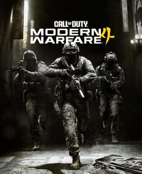
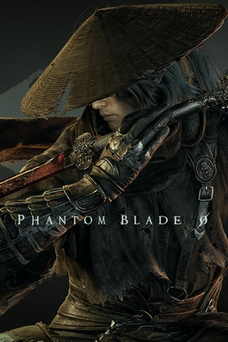
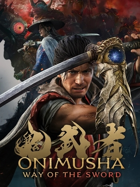
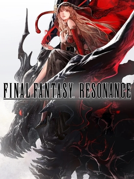
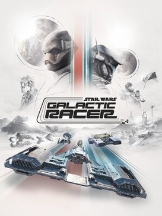
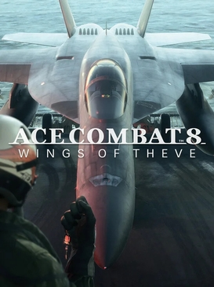
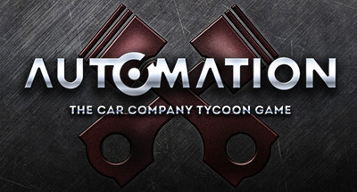
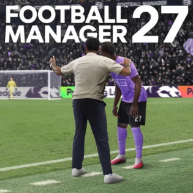

Infinity Ward's Call of Duty is set during a war on the Korean Peninsula and brings back DMZ mode. A new Zelda knocked it to #2 in the UK in its third week, but 76% of the boxed copies sold there were for PS5.

A Chinese kung-fu action game from S-Game, praised for its sword fighting. It sold more than 4 million copies in its first 72 hours, and only three days on sale were enough to make it the #4 PS5 download of October.

Capcom's first new Onimusha in 20 years is a samurai sword-fighting game set in Kyoto. It sold over a million copies on its first day and is still climbing the UK chart two months later.

The first Final Fantasy in the HD-2D pixel-art style, based on the mobile game Brave Exvius. It was again the best-selling PS5 game in Japan this week, with another 5,719 copies.
This year's EA football game adds a new street mode called The Grounds. It climbed three places to #3 in the UK and was the second-biggest PS5 download in Europe in October.

An arcade racer from Fuse Games, a studio started by former Burnout developers. It is the best-reviewed Star Wars game in over 20 years and was a top-ten PS5 download in both regions in October.

The arcade jet-fighter series is back, and it is the best-reviewed Ace Combat since 2001. It has now sold close to 90,000 PS5 copies in Japan.

The car-crash physics sandbox, a long-time PC hit, came to PS5 in Early Access, without mods or VR for now. Only Call of Duty was downloaded more on PS5 in the US and Canada in October.
An Unreal Engine 5 remake of the 2002 monster-fighting party game, with 12 kaiju. Critics call it faithful fun but thin, and it entered the UK chart at #9 in its first week.

Sports Interactive's management sim came out on PS5 on 10 Nov, and reviewers say it fixes the clunky interface of last year's game. It launched as download-only on PS5, with boxed copies due on 20 Nov, so there are no chart numbers yet.